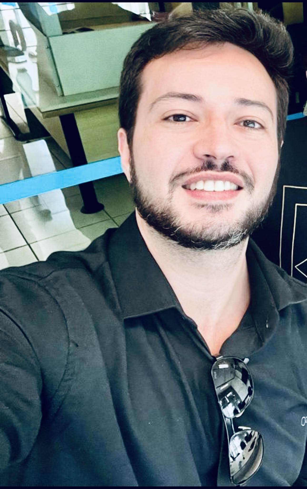

KEYNOTE SPEAKER
Prof. Dr. Rodrigo Santos (UNIRIO, Brazil)
Title:
Software Ecosystems in Industry
Abstract:
The globalization of the software industry creates business opportunities for organizations that acquire and offer IT products and services in several domains. However, the growing dependency on the networks of suppliers and external developers to reach organizational objectives and to analyze diversified stakeholders' demands brings several challenges. The reason is the fact that the set of technologies and applications – extensible and/or integrated – forms a common technological platform that joins a community of suppliers, external developers and users, generating networks known as software ecosystems (SECO). An important concern refers to SECO modeling and analysis since IT managers should make decisions based on a systemic perspective. In this talk, we aim to introduce some concepts and factors that affect SECO modeling and analysis in industry. In addition, some SECO implications on the applied software engineering & sustainability and diversity will be pointed out.
Short bio:
Rodrigo Santos is an Associate Professor at the Department of Applied Informatics at the Federal University of the State of Rio de Janeiro (UNIRIO, Brazil), where he is head of the Complex Systems Engineering Laboratory (LabESC). PhD in Software Engineering from the Federal University of Rio de Janeiro (COPPE/UFRJ, Brazil). He was Academic Visitor at University College London (UCL, UK) and Postdoc Researcher at COPPE/UFRJ. He is Research Productivity Fellow Level 2 by the Brazilian National Council for Scientific and Technological Development (CNPq, Brazil) and Young Scientist Fellow by the Carlos Chagas Filho Research Support Foundation of the State of Rio de Janeiro (FAPERJ, Brazil). His research interests are Complex Systems Engineering (especially software ecosystems and systems-of-systems), Human and Social Aspects in Software Engineering, Software Business, Software Engineering Education and Training, Requirements Engineering, and Research Methods in Software Engineering and Information Systems. He was guest editor for special issues/sections in scientific journals such as Information and Software Technology (Elsevier), Journal of Software: Evolution and Process (Wiley), Communications in Computer and Information Science (Springer), Journal of Internet Services and Applications (SBC Springer), and Journal of the Brazilian Computer Society (SBC Springer). He is the steering committee chair for SESoS@ICSE and also served as PC member for ICSE-RT, ICSE-SEET, CSEET, FSE-SEET, FSE-Demonstrations, ICSE-SCORE, SESoS, ECSA, ECSA-Tools, ECSA-DEI, ICSAW, MODELS, ICSOB, CIbSE, IWSiB, ECIS, ISD, ACM MEDES etc., as well as reviewer for IEEE TSE, EMSE, JSS, IST, COMIND, ESWA, SCP, JSEP, FGCS, IJDRR etc. Details at https://orcid.org/0000-0003-4749-2551.